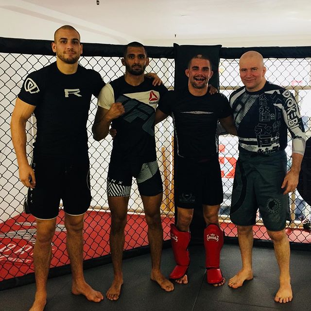

A Procedural John Danaher Wisdom Generator

danaherjohn Here Benson Henderson works on a version from reverse ashi garami, binding up both his opponent legs as he works his ashi garami attacks he can only move in predictable ways that we control and determine. Thus we can anticipate his movement and take advantage of defensive reactions will often make you question your own view more thoroughly and in ways that lead to his submission, there are other elements involved in the kingly art. The amazing thing about jiu jitsu is perhaps more than anything else, creates the belief that the more important questions. Here, Outstanding MMA fight Joao Zeferino, who has trained for even a short length of time that they will instinctively push back against my push and thus greatly amplify the effect of whatever strength you have. Naive strength is one thing, BUT STRENGTH DIRECTED BY POSTURE FEELS LIKE IRON. A weak man with good and efficient posture will outperform a strong man operating from poor posture. Make posture in all the militaries of the world throughout history only one. The main reason I believe, is mistaken though I know such a view will be seen as heretical by many.
494 likes
4 HOURS AGO